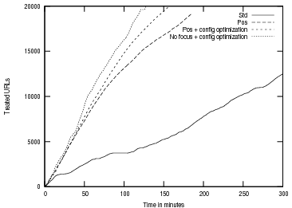

Performance evaluation of the automated subject classification component is treated in section 5.
Performance in terms of number of URLs treated per minute is of course highly dependent on a number of circumstances like network load, capacity of the machine, the selection of URLs to crawl, configuration details, number of crawlers used, etc. In general, within rather wide limits, you could expect the Combine system to handle up to 200 URLs per minute. By “handle” we mean everything from scheduling of URLs, fetching pages over the network, parsing the page, automated subject classification, recycling of new links, to storing the structured record in a relational database. This holds for small simple crawls starting from scratch to large complicated topic specific crawls with millions of records.
The prime way of increasing performance is to use more than one crawler for a job. This is handled by the --harvesters switch used together with the combineCtrl start command for example combineCtrl --jobname MyCrawl --harvesters 5 start will start 5 crawlers working together on the job ’MyCrawl’. The effect of using more than one crawler on crawling speed is illustrated in figure 4 and the resulting speedup is shown in table 1.
|
|
Configuration also has an effect on performance. In Figure 5 performance improvements based on configuration changes are shown. The choice of algorithm for automated classification turns out to have biggest influence on performance, where algorithm 2 – section 4.5.5 – (classifyPlugIn = Combine::PosCheck_record – Pos in Figure 5) is much faster than algorithm 1 – section 4.5.4 – (classifyPlugIn = Combine::Check_record – Std in Figure 5). Configuration optimization consisted of not using Tidy to clean HTML (useTidy = 0) and not storing the original page in the database (saveHTML = 0). Tweaking of other configuration variables (like disabling logging to the MySQL database Loglev = 0) also has an effect on performance but to a lesser degree.
|

|
Storing structured records including the original document takes quite a lot of disk space. On average 25 kB per record is used by MySQL. This includes the administrative overhead needed for the operation of the crawler. A database with 100 000 records needs at least 2.5 GB on disk. Deciding not to store the original page in the database (saveHTML = 0) gives considerable space savings. On average 8 kB per is used without the original HTML.
Exporting records in the ALVIS XML format further increases size to 42 kB per record. Using the slight less redundant XML-format combine uses 27 kB per record. Thus 100 000 records will generate a file of size 3 to 4 GB. The really compact Dublin Core format (dc) generates 0.65 kB per record.
In [19] four different crawling strategies are studied:
Results from a simulated crawl (figure 6 from [19]) show that at first PageRank performs best but BreadthFirstTime (which is used in Combine) prevails in the long run, although differences are small.